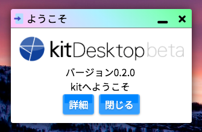

はじめてのkitアプリを作る前に、kitアプリのしくみについて知っておきましょう。kitアプリのしくみはとても簡単です。
kitアプリケーションは基本的に、kitディレクトリ直下の/app以下にアプリケーションごとにディレクトリを持つ形で存在しています。
/app以外の場所にあるアプリケーションは、「インストール」をすることで簡単に利用することもできます(これを利用すればインターネット上のディレクトリからkitアプリケーションをロードすることも可能です)。
まずは、/app/welcomeというディレクトリの中を見てみてください。これはデフォルトでkitの起動時に起動するwelcomeというアプリケーションの中身です(使用しているkitのバージョンによっては内容が異なる場合があります)。

ディレクトリは、以下のような構造をしています。welcomeというアプリケーションはこのたった4つのファイルで動いているということです。
app
└── welcome
├── default.html
├── define.json
├── detail.html
└── icon.png
最も重要なのは、define.jsonというファイルです。kitシステムは、アプリケーションをロードするとき最初にアプリのディレクトリ内のdefine.jsonを参照します。ここにはアプリケーションの情報が記述されています。
welcomeアプリのdefine.jsonは以下のようになっています。
{
"id": "welcome",
"name": "ようこそ",
"icon": "icon.png",
"version": "1.1.0",
"author": "kit",
"size": {
"width": 300
},
"view": "default.html",
"script": "none",
"css": ""
}
ここにアプリケーションの名前や作者名などの情報が記述されます。それぞれの項目の詳細はここでは省きますが、アプリの起動時にviewという項目に記述されたファイル(ここではdefault.html)がアプリの画面(テンプレート)として読み込まれる仕組みです。
define.jsonの書き方や内容については、define.json - 定義可能項目の一覧をご確認ください。
次に、default.htmlの内容を見てみましょう。kitでは、HTMLを使ってアプリケーションのテンプレートを記述することができます。部分的なテンプレートとして記述するため、<html>タグや<body>タグ、<head>タグは必要ありません。
<div class='p kit-text-c'>
<img src="system/ico/logo.png" style="max-width: 100%;">
バージョン<span kit-text="System.version" kaf></span>
<br>
kitへようこそ
<br>
<kit-button kaf kit-ref='detail.html'>詳細</kit-button>
<kit-button kaf kit-close>閉じる</kit-button>
</div>
たったこれだけのHTML記述でこのような見た目のアプリケーションを作成することができるのです。
ここで指定されているclass属性は、CSSフレームワークkitstrapのものです。kit-から始まる属性はkit
apps framework(kaf)によるアプリケーションの動作定義です。
これらの標準実装のおかげで、簡単に、ほとんどコーディングすることなくkitアプリケーションのテンプレートを作成、動作を定義することが可能になっています。詳細や使い方は次の章で紹介します。